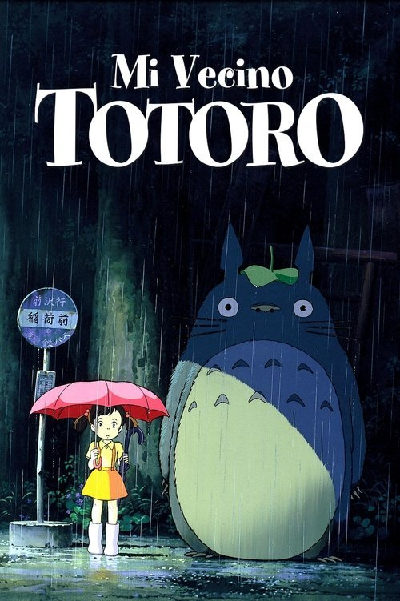

Mi vecino Totoro (1988)
Sinopsis Rápida
Dos hermanas se mudan al campo con su padre para estar cerca de su madre enferma, y allí descubren un mundo mágico habitado por criaturas fantásticas, incluyendo al entrañable Totoro.
Sinopsis Detallada
En un Japón rural de los años 50, Satsuki y Mei, dos jóvenes hermanas, se mudan a una vieja casa cerca de un bosque para estar más cerca de su madre hospitalizada. Allí, experimentan una aventura mágica al descubrir una familia de seres espirituales, los Totoro. La película explora temas de la infancia, la naturaleza, la pérdida y la esperanza con una sensibilidad única. La animación de Studio Ghibli es sencillamente sublime, creando un mundo de ensueño visualmente impactante.
¿Por qué tenés que verla?
- Una experiencia cinematográfica inolvidable que conecta con la magia de la infancia.
- La banda sonora de Joe Hisaishi es icónica y complementa a la perfección la atmósfera mágica.
- Su impacto cultural es innegable, convirtiéndose en un clásico de la animación a nivel mundial.
- Personajes entrañables que permanecerán en la memoria del espectador.
Idea Extra
Análisis del simbolismo en Mi Vecino Totoro: Explorando las representaciones de la naturaleza, la enfermedad y el crecimiento personal.